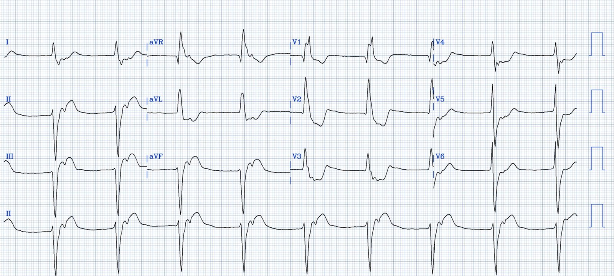
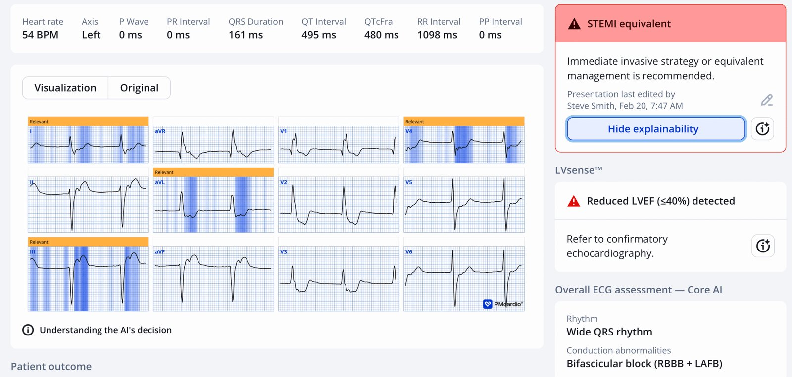
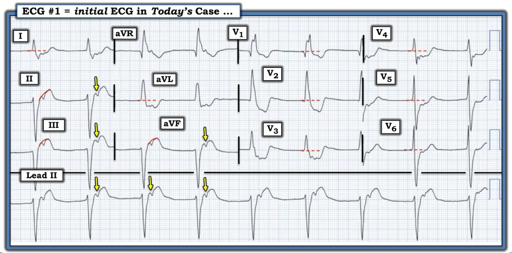

20/02/2026 — Bạn đọc điện tâm đồ này thế nào khi không có bối cảnh lâm sàng (mà tôi không biết)?
Bản dịch tiếng Việt của bài "How do you interpret this ECG without the clinical context (which I don’t know)?" – Dr. Smith’s ECG Blog. Giữ nguyên toàn bộ 3 hình ảnh của bản gốc.
Tôi tình cờ gặp điện tâm đồ thú vị này mà không có bối cảnh lâm sàng:


Bạn nghĩ gì?
Nhịp: Theo tôi, đây có vẻ là nhịp tự thất gia tốc (AIVR) [so với nhịp bộ nối/nhịp thoát bộ nối kèm RBBB và LAFB] — (xem phần bàn luận rất chi tiết của Ken bên dưới). Không có sóng P. Tâm thất đang phát nhịp ở tần số nhanh hơn một nút xoang chậm. Và bạn cũng có thể thấy sóng P ngược dòng theo sau mỗi phức bộ QRS. Làm sao tôi biết đây là AIVR? Rộng, đều, chậm (không thể là VT). Nhịp thoát có hình dạng RBBB/LAFB, nghĩa là nó thoát ra từ phân nhánh trái sau.
Còn gì nữa? Mặc dù các chuyển đạo trước tim giống RBBB, QRS ở các chuyển đạo chi lại giống LBBB, vì vậy tôi sẽ đánh giá các chuyển đạo chi bằng tiêu chuẩn Sgarbossa cải biên theo Smith (Smith Modified Sgarbossa Criteria). Do đó, bình thường phải có ST chênh lên ngược hướng tương xứng (với QRS) ở các chuyển đạo có QRS âm (ví dụ chuyển đạo III). Khó xác định chính xác điểm J nằm ở đâu trong các chuyển đạo dưới, nhưng tôi nghĩ nó vào khoảng 5mm ở chuyển đạo III, khiến tỷ số ST/S = 25%. Như vậy, có ST chênh lên ngược hướng quá mức ở chuyển đạo III, và ST chênh xuống soi gương ngược hướng quá mức ở chuyển đạo aVL (30%).
Ở các chuyển đạo trước tim, vốn giống RBBB, ST chênh xuống ở V2-3 không tương xứng (> 30%). QRS đẳng điện ở V4 (sóng R và sóng S có cùng điện thế), vì vậy đoạn ST lẽ ra phải đẳng điện. Nhưng nó lại chênh xuống rất nhiều. V5 cũng vậy.
Vì vậy, đây là hình ảnh chẩn đoán OMI trên nền LBBB. AIVR gợi ý rằng tổn thương này đang tái tưới máu, vì AIVR là một nhịp tái tưới máu.
Tôi không biết chắc, nhưng tôi tin rằng đây là điện tâm đồ của một OMI dưới-sau vừa được can thiệp mạch vành qua da (PCI) cách đây vài phút, và vẫn còn nhiều thay đổi ST-T do thiếu máu cục bộ tồn dư mà tôi ngờ rằng sẽ hết trong vòng vài phút.
Đây là kết quả đọc của PMCardio Queen of Hearts:


= = =
Ứng dụng PMcardio for Individuals 3.0 mới nay đã tích hợp mô hình Queen of Hearts mới nhất và khả năng giải thích của AI (bản đồ nhiệt màu xanh lam)! Tải ngay cho iOS hoặc Android. https://www.powerfulmedical.com/pmcardio-individuals/ (BS. Smith và BS. Meyers đã huấn luyện mô hình AI và là cổ đông của Powerful Medical). Là thành viên cộng đồng của chúng tôi, bạn có thể dùng mã DRSMITH20 để được giảm 20% độc quyền cho năm đầu tiên của gói đăng ký hằng năm. Tuyên bố miễn trừ: Một số mô-đun AI ECG là thiết bị y tế mang dấu CE theo Quy định Thiết bị Y tế của EU (EU MDR) và chỉ được chứng nhận lưu hành tại Liên minh châu Âu và Vương quốc Anh. Công nghệ PMcardio chưa được Cục Quản lý Thực phẩm và Dược phẩm Hoa Kỳ (FDA) chấp thuận cho sử dụng lâm sàng tại Hoa Kỳ.
= = =
======================================
BÌNH LUẬN CỦA TÔI, bởi KEN GRAUER, MD (20/2/2026):
Đọc điện tâm đồ trên lâm sàng cần có bệnh sử. Bệnh sử đó có thể ngắn gọn (thường chỉ cần không quá 1 đến 3 dòng) — nhưng nếu không có một bệnh sử ngắn gọn liên quan, chúng ta chỉ còn biết đoán ý nghĩa thực sự của bất kỳ bản ghi nào.
- Dù đã nói như trên — nhiều người (phần lớn) chúng ta ít nhất thỉnh thoảng vẫn gặp một số bản ghi cần đọc mà không có bất kỳ bệnh sử nào hỗ trợ.
- Tôi xem việc đọc những bản ghi như vậy là cực kỳ thử thách — vì điều này buộc chúng ta phải hình dung đánh giá lâm sàng của mình có thể khác đi như thế nào, tùy theo bệnh nhân đang bị CP (đau ngực — Chest Pain) cấp — hay gần đây đã bị CP nhưng nay không còn — hay — được ghi điện tâm đồ này vì một lý do khác.
= = =
Ca hôm nay không có bệnh sử.
- Vậy — BẠN đã tiếp cận việc đọc điện tâm đồ hôm nay như thế nào? Hy vọng bạn đã tự thử thách mình trước khi xem phần diễn giải tài tình của BS. Smith . . .
= = =
Suy nghĩ của tôi …
- Đề xuất: Như khi đọc bất kỳ bản ghi nào — tôi thích bắt đầu bằng việc mô tả có hệ thống những gì chúng ta thấy. Làm như vậy không kéo dài quá trình đọc. Ngược lại, thường quy áp dụng một cách tiếp cận có hệ thống là phương pháp tiết kiệm thời gian nhất để đọc điện tâm đồ, với lợi ích bổ sung là đọc có hệ thống giúp tránh bỏ sót các khả năng khác.
Tôi đã đánh dấu điện tâm đồ hôm nay trong Hình 1. Theo cách tiếp cận P‘s,Q‘s,3R (Ps, Qs & 3R Approach) mà tôi ưa dùng để đọc nhịp (mà tôi ôn lại TẠI ĐÂY trong ECG Video #1) — Những điều tôi cân nhắc về nhịp hôm nay như sau:
- LƯU Ý: Trình tự tôi xem xét 5 thông số trong cách tiếp cận Ps,Qs,3R không quan trọng — và tôi thường thay đổi thứ tự đánh giá sự hiện diện của sóng P — độ rộng QRS — và 3R (Rate — tần số và Regularity — tính đều của nhịp — và nếu có hoạt động nhĩ, liệu hoạt động nhĩ đó có [hay không] Related — liên quan với các phức bộ QRS kế cận).
- Trong Hình 1 — phức bộ QRS rộng. Ở một số chuyển đạo ngực có thể không hẳn trông rộng — nhưng ở các chuyển đạo như V1, rõ ràng thời gian QRS dễ dàng vượt quá 0,12 giây.
- Nhịp thất Đều (Regular) — với khoảng R-R dài ~5,5 ô lớn (tức là Tần số (Rate) thất ~55/phút).
- Có sóng P — và như các mũi tên VÀNG tôi vẽ trong Hình 1, sóng P rõ ràng có Liên quan (Related) với phức bộ QRS đứng trước chúng (thấy rõ nhất ở dải nhịp chuyển đạo II dài — xác nhận dẫn truyền ngược dòng 1:1 của các sóng P này nhờ khoảng RP’ cố định).
- Xin nhấn mạnh: Việc thấy hoạt động nhĩ V-A 1:1 (tức là ngược dòng) không phải là “phân ly nhĩ thất” — vì các sóng P ngược dòng trong Hình 1 có liên quan với các phức bộ QRS kế cận qua khoảng RP’ hằng định. Khi có phân ly nhĩ thất — thì sóng P không liên quan theo bất kỳ cách nào với các phức bộ QRS kế cận.
= = =
Vậy TẠI SAO QRS lại rộng trên điện tâm đồ hôm nay?
Lúc đầu tôi không chắc chắn về câu trả lời cho câu hỏi này.
- Dẫn truyền ngược dòng 1:1 có thể gặp với nhịp thất hoặc nhịp trên thất. Vì vậy — tôi không thể loại trừ khả năng nhịp bộ nối trên điện tâm đồ hôm nay, trong đó có blốc hai phân nhánh có sẵn từ trước ( = RBBB/LAHB).
- Dù vậy — tôi hoàn toàn đồng ý với nhận định của BS. Smith, rằng khi không có điện tâm đồ cũ để so sánh — nguyên nhân từ thất có vẻ khả dĩ hơn nhiều vì: i) QRS rất rộng, chỉ có sóng S tận nhỏ ở chuyển đạo I và chỉ có sóng r khởi đầu rất nhỏ ở các chuyển đạo dưới — “trông” giống nhịp thất hơn nhiều; — và, ii) Như BS. Smith đã nêu — một nhịp thất hơi gia tốc thường gặp nhất dưới dạng rối loạn nhịp tái tưới máu sau một nhồi máu cơ tim gần đây.
= = =
Cách định nghĩa AIVR:
Việc phân biệt giữa nhịp “thoát” tự thất — với — AIVR ( = nhịp tự thất gia tốc — Accelerated IdioVentricular Rhythm) — với — VT (nhịp nhanh thất — Ventricular Tachycardia) — tốt nhất dựa vào: i) Bối cảnh lâm sàng; — và, ii) Tần số của nhịp thất.
- AIVR là một nhịp lạc chỗ thất “tăng cường” xảy ra nhanh hơn tần số thoát thất nội tại (tự thất) (ở người lớn là ~20-40/phút) — và chậm hơn nhịp nhanh thất có ý nghĩa huyết động (tức là VT thường biểu hiện ở tần số >130-140/phút).
- Do đó, tần số thường gặp của AIVR là trong khoảng ~60-110/phút (với một vùng “chồng lấp” giữa AIVR và VT nhanh ở ~110-130/phút).
- Kết luận: Vì vậy, nhịp trong ca hôm nay được mô tả tốt nhất là AIVR — với tần số thất rõ ràng nhanh hơn tần số “thoát” thông thường 20-40/phút — nhưng chậm hơn hẳn mức ≥130-140/phút thường đánh dấu ngưỡng của VT có ý nghĩa huyết động.
= = =
Bằng chứng trong ca hôm nay về một nhồi máu cơ tim gần đây:
Mặc dù rõ ràng khó hơn khi nhận biết và đánh giá ý nghĩa tiềm tàng của các sóng ST-T trông bất thường trong một nhịp thất — vẫn có những lúc các thay đổi như vậy là chẩn đoán OMI cấp! (Xem Bình luận của tôi ở cuối trang trong bài ngày 8 tháng Tư năm 2022 và trong bài ngày 6 tháng Tư năm 2025). Nhiều khả năng đây cũng là điều chúng ta đang thấy trong ca hôm nay:
- Ấn tượng nhất trong Hình 1 — là ST chênh xuống quá mức ở các chuyển đạo ngực, tối đa ở các chuyển đạo V2,V3,V4. Điều này gợi ý mạnh OMI thành sau.
- Sóng P ngược dòng ở các chuyển đạo dưới làm biến dạng đoạn ST ở các chuyển đạo II,III,aVF (mũi tên VÀNG ở các chuyển đạo này). Để bù trừ điều này — tôi đã vẽ các cung ĐỎ ở các chuyển đạo dưới để cho thấy đoạn ST lẽ ra sẽ trông như thế nào nếu không có dẫn truyền ngược dòng (tức là đoạn ST ở các chuyển đạo dưới sẽ dạng vòm, chênh lên và trông tối cấp).
- Đi kèm với ST chênh xuống không tương xứng ở các chuyển đạo bên cao I,aVL (tức là thay đổi ST-T soi gương) — các thay đổi tối cấp ở chuyển đạo dưới này giúp khẳng định nhận định từ chuyển đạo chi là OMI thành dưới.
- Như BS. Smith đã nêu — bằng chứng điện tâm đồ về OMI dưới-sau đi kèm với AIVR gợi ý mạnh rằng một nhịp tái tưới máu là lý do QRS rộng trong ca hôm nay.
= = =
Hình 1: Tôi đã đánh dấu điện tâm đồ hôm nay.


= = =
Thêm về AIVR …
AIVR thường xảy ra trong một trong các Bối cảnh lâm sàng sau: i) Là một nhịp trong ngừng tim; ii) Trong giai đoạn theo dõi nhồi máu cơ tim cấp (đặc biệt khi đi kèm nhồi máu cơ tim thành dưới); — hoặc, iii) Là một rối loạn nhịp tái tưới máu (sau tiêu sợi huyết, nong mạch cấp cứu, hoặc tái tưới máu tự phát). Nó cũng có thể xảy ra ở bệnh nhân có bệnh mạch vành nền, bệnh cơ tim, và/hoặc ngộ độc digoxin.
- AIVR thường là một “nhịp thoát” — theo nghĩa nó xuất hiện vì cả nút SA và nút AV đều không hoạt động bình thường. NẾU cần điều trị (có thể xảy ra nếu mất “cú hích” nhĩ gây tụt huyết áp) — Atropine là thuốc được lựa chọn (với hy vọng làm nút SA tăng tốc đủ để lấy lại chức năng tạo nhịp). Không được sốc điện AIVR cũng không điều trị bằng thuốc chống loạn nhịp như Amiodarone/Procainamide — vì làm vậy có thể dẫn đến vô tâm thu.
- LƯU Ý #1: Trong những trường hợp hiếm — AIVR có thể xảy ra từng lúc ở người khỏe mạnh không có bệnh tim nền. Nếu những người này không có triệu chứng trong các cơn — thì không cần điều trị.
- LƯU Ý #2: Khi AIVR xảy ra ở người khỏe mạnh — thường là do tăng trương lực phế vị, đủ để tác động lên ổ lạc chỗ ở thất (điều này đặc biệt đúng khi gặp AIVR ở vận động viên).
- LƯU Ý #3: Khi AIVR là một rối loạn nhịp tái tưới máu đi kèm nhồi máu cơ tim cấp hoặc gần đây — nó thường thoáng qua, không triệu chứng và không cần điều trị.
ĐIỀU CỐT LÕI: Tầm quan trọng của việc phân biệt giữa AIVR (tức là “VT chậm” ) — với “VT nhanh” (tần số tim thường ≥130/phút) — là AIVR thường không cần điều trị tích cực (miễn là bệnh nhân ổn định huyết động và dung nạp được nhịp này) — trong khi điều ngược lại đúng với VT bền bỉ.
- “Bỏ mặc có chủ đích” ( = theo dõi) thường là cách tiếp cận thận trọng nhất đối với AIVR (bên cạnh việc bảo đảm đủ oxy, điện giải bình thường, v.v.) — vì dạng nhịp thất này ít có khả năng chuyển thành VT nhanh/VFib hơn nhiều.
- Cần nhớ: Tồn tại một khoảng tần số trung gian ( = “vùng xám” ), trong đó nhịp thất trong khoảng ~110-130/phút — khi đó cần đến nhận định lâm sàng (tùy theo tình huống) để quyết định liệu nhịp thất này có (hay không) cần điều trị tích cực.
Cuối cùng — Với bạn đọc quan tâm đến các minh họa giản đồ bậc thang (laddergram) liên tiếp của một nhịp AIVR phức tạp — Hãy xem Bình luận của tôi ở cuối trang trong bài ngày 3 tháng Mười năm 2023.
= = =
= = =